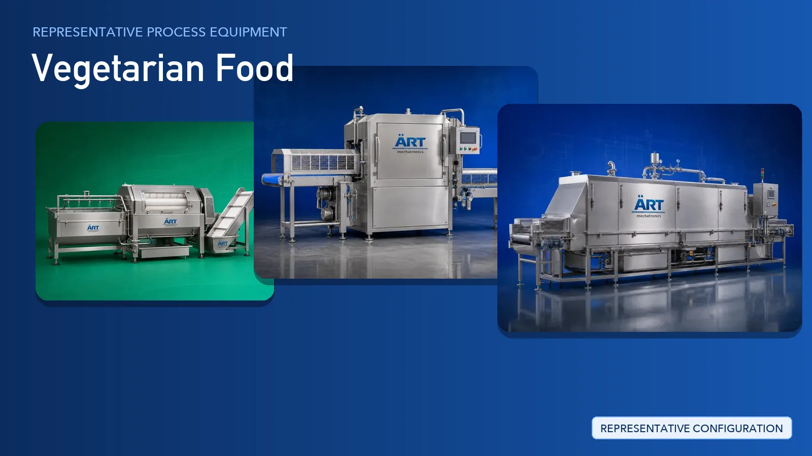

Canned Fruits, Vegetables & Pickle Processing Plant & Machinery Solutions
Canned fruits, vegetables and pickle processing preserves seasonal produce in brine, syrup, oil or vinegar inside sealed cans, jars and bottles. Produce is washed, sorted, peeled, de-seeded and cut, blanched where the recipe needs it, filled with the prepared liquid, seamed or capped, then pasteurised and labelled.

Complete Canned Fruits, Vegetables Pickle Process Flow
Fruit and vegetables are washed and rinsed, then sorted to remove bruised, discoloured and undersized pieces. Grading by size matters because pack appearance is judged through the glass or on opening.
Skins, stones, seeds and stems are removed depending on the fruit or vegetable being packed. The produce is then cut into halves, slices, cubes or spears to suit the pack format.
Vegetables are blanched to soften them and set their colour before filling. In parallel, brine, sugar syrup or the oil and spice mix for pickle is prepared and held in jacketed tanks.
Solids are filled into cans, jars or bottles and topped up with the hot liquid. Cans are seamed and jars and bottles are capped to make an airtight closure.
Sealed containers are pasteurised or sterilised where the recipe calls for it, while oil and salt preserved pickles are closed without heat treatment. They are then cooled and dried before labels are applied.
Cans and jars are labelled and coded with batch and date details. Containers are then packed into cases and palletised for dispatch.
Machinery Required for Canned Fruits, Vegetables Pickle Plant
Turnkey Canned Fruits, Vegetables Pickle Plant Solutions
ART Mechatronics offers complete turnkey solutions for vegetarian food processing plants, including:
- Process design & plant layout
- Multi-product vegetarian processing systems
- Cooking, freezing and preservation systems
- Hygienic, dedicated-vegetarian plant design
- Dust collection & air handling for food areas
- Automation & control panels
- Packaging line integration
- Installation & commissioning
- After-sales support
We customize solutions based on:
- Product category (frozen, instant, ready-to-eat, pickle, canned, batter)
- Production capacity
- Automation level
- Packaging format
- Export requirements
Why Choose ART Mechatronics for Canned Fruits, Vegetables Pickle
- Expertise in multi-category vegetarian food processing systems
- Dedicated, fully vegetarian production lines
- Freezing, blanching and cooking systems built around the product
- Hygienic food-grade machinery design
- Automated production lines with integrated inspection
- Consistent product quality batch after batch
- Global export capability
Machinery in a Canned Fruits, Vegetables Pickle plant
Where it's used
Get pricing & specs for the Canned Fruits, Vegetables Pickle plant
Share the product, target capacity, current process and plant location. These details help our engineers discuss the right machine or line configuration.
One partner, from design to start-up
ART Mechatronics designs, manufactures, installs and commissions your Canned Fruits, Vegetables Pickle plant solution with regional presence in India, UAE and Thailand.